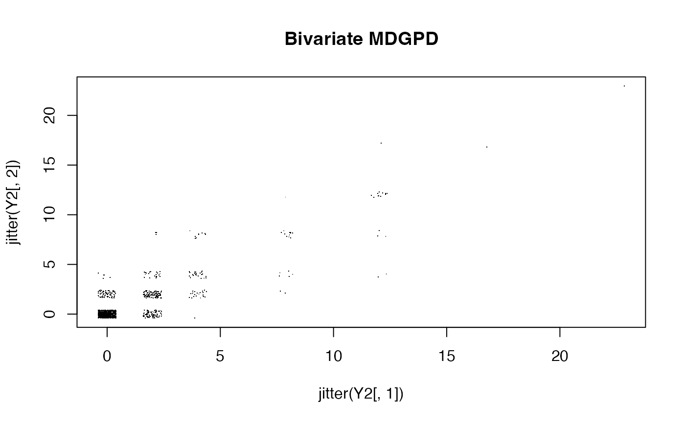
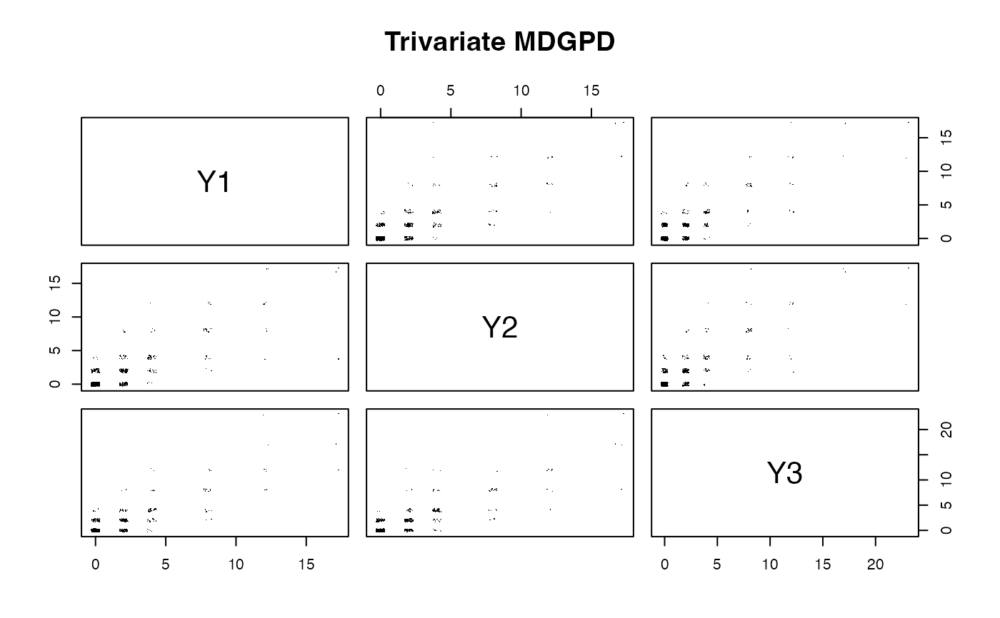

Generates random samples from the d-dimensional Multivariate Discrete
Generalized Pareto Distribution (MDGPD) of Aka, Kratz & Naveau (2025).
Uses the generator-based construction with an equicorrelated Poisson
generator and geometric maximum component. This function is pure R and
does not require Julia.
Arguments
- n
integer; number of observations to generate.
- sigma
positive numeric; GPD scale parameter (common across dimensions).
- xi
non-negative numeric; GPD shape parameter. When
xi = 0the marginals reduce to scaled geometric.- lambda
positive numeric; Poisson rate for the generator components. Controls the spread of the dependence structure.
- rho
numeric in \[0, 1); equicorrelation of the
d-dimensional Poisson generator. Higher values give stronger positive dependence:rho -> 1gives near-perfect dependence,rho = 0gives weakest dependence for the givenlambda.- d
integer >= 2; dimension of the multivariate distribution (default
2L).
Details
The construction follows Aka, Kratz & Naveau (2025), generalised to
dimension d:
Generate
d-dimensional equicorrelated Poisson generator \(T_j = X_j + Z\) where \(Z \sim Poisson(\rho\lambda)\) (common) and \(X_j \sim Poisson((1-\rho)\lambda)\) (independent), for \(j = 1, \ldots, d\).For each component \(i\), compute the spectral difference \(\Delta_i = T_i - \max_{j \neq i} T_j\).
Generate \(G \sim Geometric(1 - e^{-1})\), independently.
Standard MDGPD: \(N_i = G + \min(\Delta_i, 0)\).
Non-standard transform to discrete GPD marginals: \(M_i = \lfloor \sigma (e^{\xi \max(N_i, 0)} - 1) / \xi \rfloor\).
The parameter rho controls dependence strength: when rho
is close to 1, all components tend to be equal. The parameter
lambda controls the spread of the spectral differences.
For d = 2, the spectral difference reduces to
\(\Delta = T_1 - T_2\) and the construction matches the bivariate
case in the original paper.
This function is experimental and its interface may change.
References
Aka, S., Kratz, M., and Naveau, P. (2025). Multivariate discrete generalized Pareto distributions: theory, simulation, and applications to dry spells. arXiv preprint arXiv:2506.19361.
Examples
# Bivariate (default)
Y2 <- rmdgpd(1000, sigma = 2, xi = 0.2, lambda = 1, rho = 0.5)
plot(jitter(Y2[,1]), jitter(Y2[,2]), pch = ".", main = "Bivariate MDGPD")

# Trivariate
Y3 <- rmdgpd(1000, sigma = 2, xi = 0.2, lambda = 1, rho = 0.5, d = 3)
pairs(Y3 + runif(length(Y3), -0.3, 0.3), pch = ".", main = "Trivariate MDGPD")
